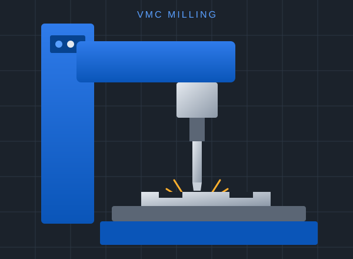

A purpose-built facility with modern VMC centres, precision measuring instruments and skilled operators for consistent, on-time results.
Every job is inspected before dispatch, so the parts you receive match your drawing.
Modern vertical machining centres
In-process inspection & measuring instruments
Production support for urgent jobs
Jobs inspected before dispatch